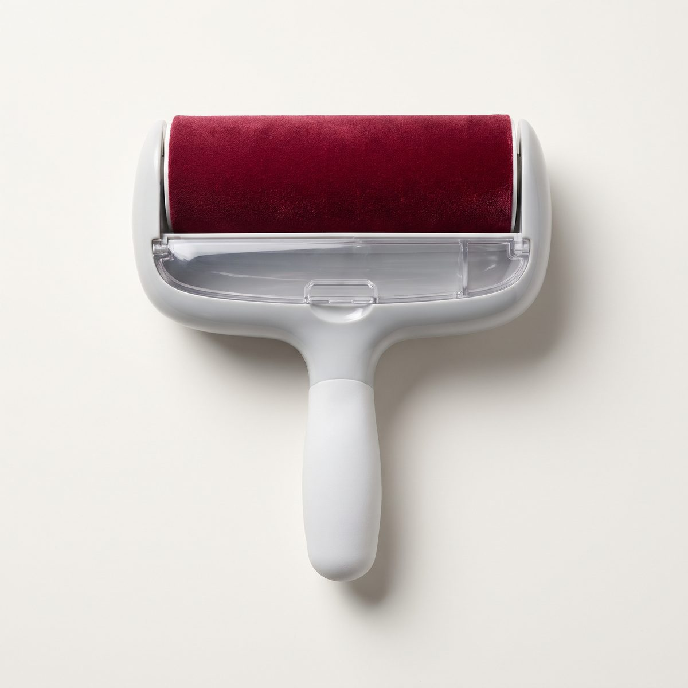
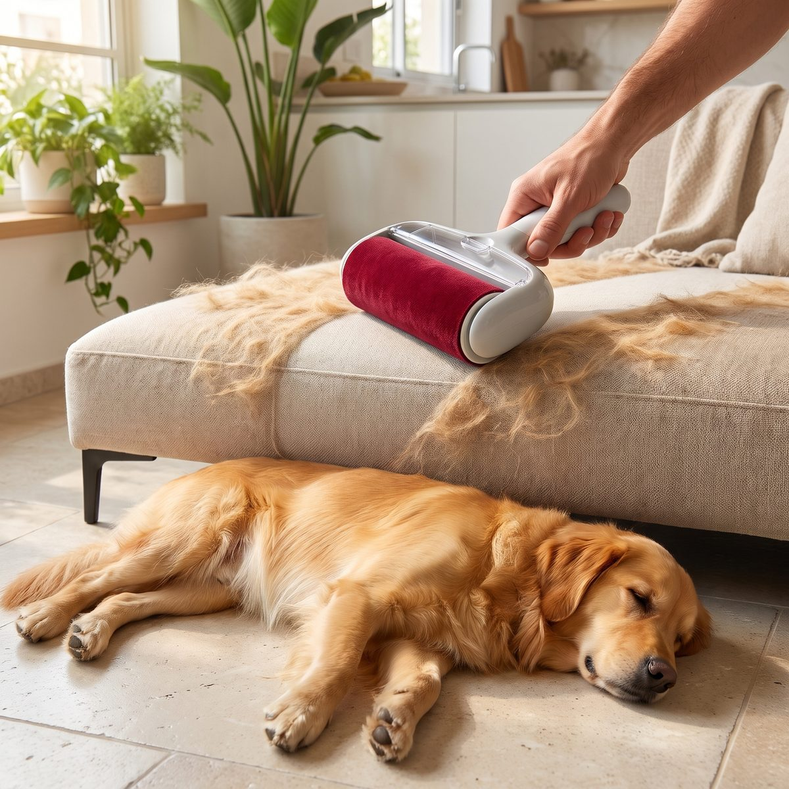

רולר להסרת שיער חיות, רב פעמי ובלי מדבקות
מעבירים כמה פעמים על הספה, והשיער נאסף לתא סגור. בלי גלילי דבק ובלי פסולת.
79 ₪ 109 ₪ · עלות ספק ~$3.2 (~12 ₪)
תיאור מלא
שיער של כלב או חתול על הספה, על השמיכה ועל הבגדים? הרולר הזה אוסף אותו בתנועה קדימה ואחורה ושומר אותו בתא סגור. מרוקנים בלחיצה אחת ומשתמשים שוב ושוב.
- עובד על ספות, מיטות, שטיחים, מושבי רכב ובגדים
- רב פעמי לגמרי, אין גלילי דבק להחליף
- תא איסוף שנפתח בלחיצה ומתרוקן ישר לפח
- לא צריך חשמל, סוללות או מים
- ידית נוחה ואחיזה יציבה גם לניקוי של כל הספה
מה בקופסה: רולר אחד להסרת שיער חיות.
משלוח ואחריות: נשלח עד אליכם עם מספר מעקב. הגיע פגום? נחליף או נחזיר לכם את הכסף. ביטול עסקה לפי חוק הגנת הצרכן.